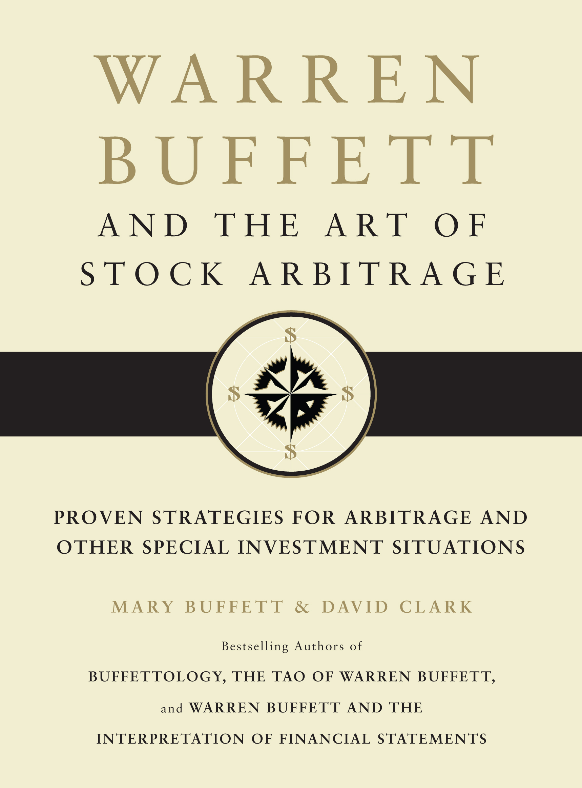

玛丽·巴菲特（Mary Buffett）和大卫·克拉克（David Clark）长期合写“Buffettology”系列，但两人都没有以伯克希尔管理者身份参与沃伦·巴菲特的交易。《Warren Buffett and the Art of Stock Arbitrage》由Scribner于2010年11月出版，共176页，副标题是“Proven Strategies for Arbitrage and Other Special Investment Situations”。它是作者根据伯克希尔年报、监管披露和公开交易整理出的解释，不是巴菲特本人撰写或逐项确认的操作手册。巴菲特在合伙企业时期把这类机会称作“workouts”，后来在年报中也讨论过并购套利，但没有把它们整理成本书的分类体系。目前没有查到正式中译本，《巴菲特与股票套利艺术》是对英文标题的自然翻译；市面上的《巴菲特股票投资术》对应另一部作品，不能混为本书中文版。
书中所说的股票套利主要是并购套利：收购方已提出未来按固定现金或股票比例购买目标公司，而目标股价因成交时间和失败风险低于要约价值。作者用当前价、要约价、预计等待时间和交易成功概率估算年化收益，再讨论反垄断审查、融资、股东表决、重大不利变化条款和股票对价波动。现金收购的表面价差最直观；换股交易还要根据交换比例对冲收购方股价，带价格区间的“领口”条款又会改变对冲数量。后续章节扩展到要约回购、荷兰式拍卖、清算、分拆、重组、特许权信托和主有限合伙。与同时在两个市场锁定无风险价差的传统套利不同，这些交易承担真实的事件风险；如果收购失败，目标股价可能回到公告前水平，损失会远大于原先几美元的价差。
出版社宣传沿用了书中的一组数字：作者把1980至2003年间伯克希尔的261笔公开投资重新分类，称套利操作约占22%，测得年化回报81.28%，非套利投资为26.96%。这些数字应明确归属于作者的样本和分类，不能写成伯克希尔公布的独立套利账户业绩。公开持仓无法完整还原买卖日期、仓位规模、费用、税收、借款成本和未披露交易，81.28%也不代表伯克希尔总资产能按这一速度复利。年化结果对持有天数极敏感：三个月赚取几个百分点可折算成很高年化值，但资金未必能全年无缝找到同样机会，闲置现金也会降低实际组合收益。它能说明小规模特殊情境可能产生很高的资本周转率，不能证明套利天然低风险或可无限扩容。
本书最实用的部分是把价差拆成可检查的问题：成交后能赚多少，失败会亏多少，资金要占用多久，哪些条件会改变概率。还应分别计算交易延期、降价成交和完全破裂，而不是只设“成功或失败”两个端点。不同事件也不能共用一个基础成功率：已签合并协议、单方面意向、敌意要约和待清算资产的法律确定性并不相同。局限同样具体。作者对巴菲特意图的解释带有推断成分，案例截至2010年前后；此后并购审查、融资成本和交易竞争已经变化。使用杠杆会把等待时间和尾部损失同时放大，多笔看似独立的交易也可能在信贷收紧时一起失败，税后收益则可能远低于表面年化值。读者可以借它学习要约与分拆的结构，却应以交易文件和监管披露为准，并为失败情景计算损失，而不是只把要约价减去市场价。